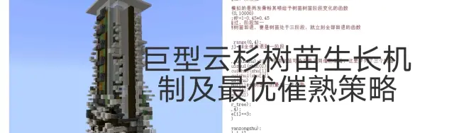
MC 巨型云杉树的生长机制以及最优催熟策略
一. 简介： 不知为何，可能高速巨型云杉树厂是mcbe一块难啃的骨头，引得树厂群的大佬随机纷纷挑战。鉴于目前还没有对巨型云杉树厂有一个精确的数学模型解释，在此笔者用代码求近似数来给出一种答案。希望能对追求极限效率的tree farmer有所参考。
下面是一些高速巨云杉树厂实例：
@FurFur_123的22gt三发检测式大云杉树厂
这是一个常见的三发检测式大云杉树厂
架构速度：二归14gt+检测4gt+上传2gt＝22gt
夜空中最亮的星的22gt高速巨云杉树厂
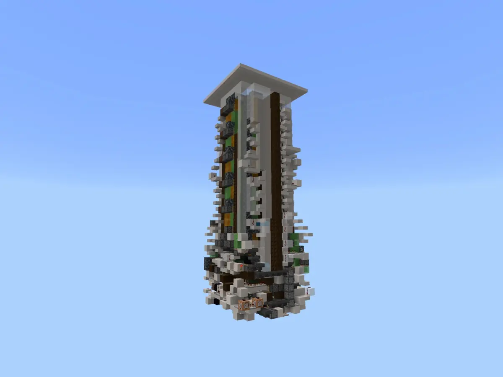
@愚蠢的德州马钰的22gt巨型云杉树厂
视频传送门：
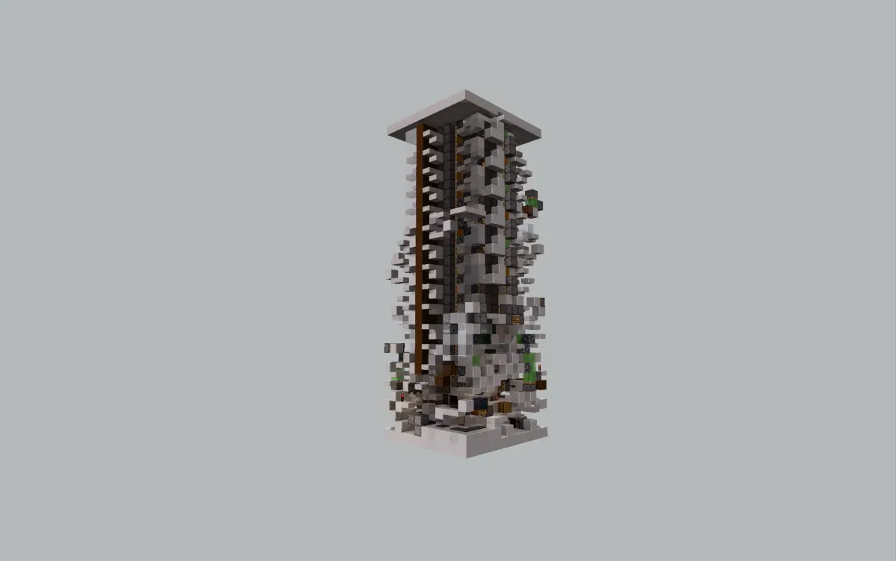
MCBE 检测式大云杉树场世界纪录20gt B 站视频 »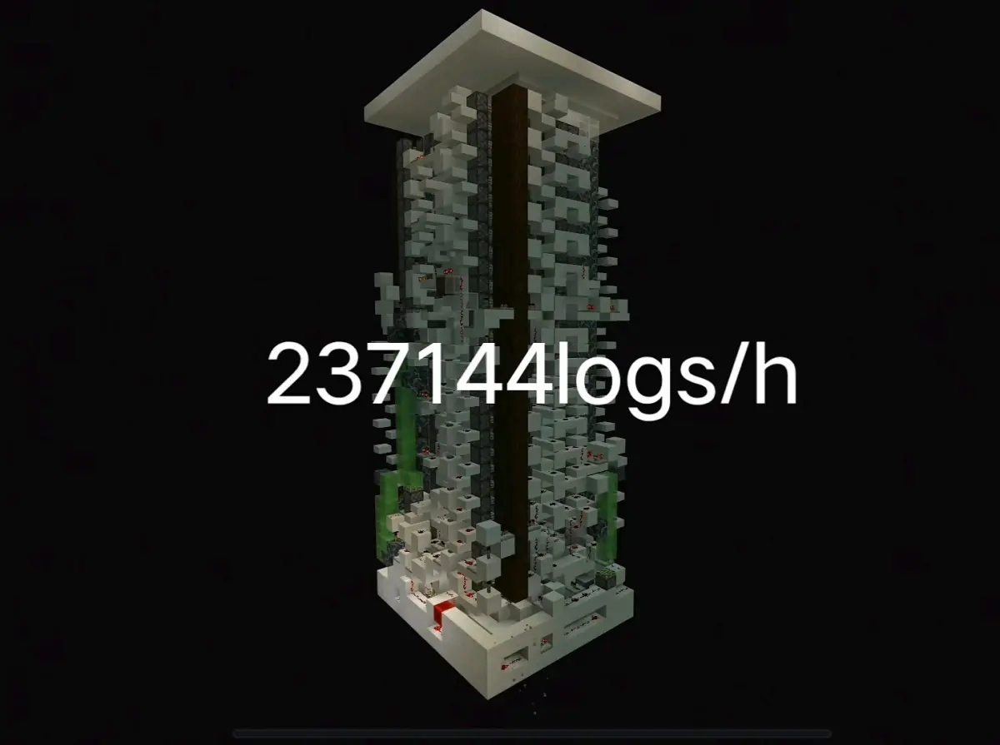
@EarthGlobe的20gt巨型云杉树厂
视频传送门：
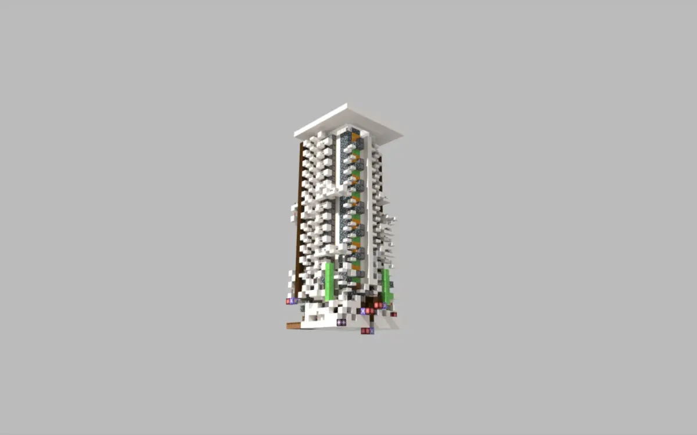
MCBE 世界最快20gt巨型云杉树场 237K B 站视频 »rue佬的18gt大云杉树厂：
以上是一些比较完善的巨云杉树厂。介绍完树厂，咱们开始深层次挖掘巨型云杉的生长机制。
二.巨型云杉生长机制：
主要贡献者：linlin（@bWFuanVzYWth）
马钰（@愚蠢的德州马钰）
Rss（@RSSMCRedRockRT）
建模工具：Python（用于建模和计算）
Excel（用于制表）
1.巨型云杉树苗检测范围：西北角树苗为中心，第一层是三三检测，第二到十五层是五五检测，范围内只允许实体，泥土（灰化土不行），树叶存在。
2.巨型云杉树苗中的单个树苗在被给予一发骨粉的时候，有0.45的概率进行一次生长尝试，对于一阶段的树苗，生长尝试一定通过，二阶段树苗树苗检测如下图的生长范围，通过则成树；不通过则全体树苗退回第一阶段。
3.巨型云杉树苗四个树苗互相独立，每个树苗被催熟行为和单树苗树种一致，而且只要其中一个树苗通过二阶段生长检测（检测范围是整体大云杉的检测范围），则立刻生长成巨型云杉树。
对此我们发现巨型云杉的四个树苗之间独立又相互关联；他们二阶段生长检测不通过则同时回退；而且共用一个检测范围，即整个大云杉的检测范围。独立体现在各个树苗催熟生长是独立的，只要一个通过二阶段，巨型云杉即可长出。
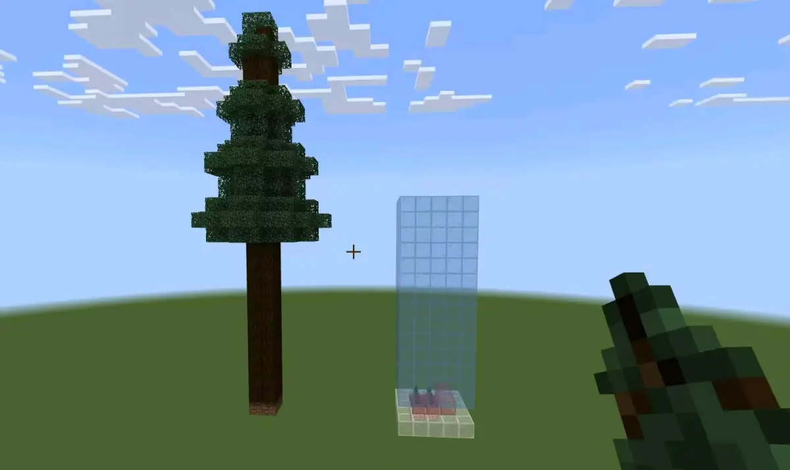
巨型云杉和它高度为15的空间检测范围
4.玩家在种树的时候，如果此时有发射器对树苗进行催熟，在没有种植第四棵树苗的时候，如果有其他树苗生长状态发生变化，在第四棵树苗种下并组成巨型云杉树苗的时候，各个树苗的状态仍然保留，并不是全部从一阶段从新开始。
5.巨型云杉最高29高，而且最顶层是东南边的独木。
三.问题的数学建模：
大云杉催熟模型的难度在于，四个树苗概率既有相互独立的一面，又有关联的一面（生长检测不通过同时会退），导致用数学方法求解精确解难度极大。
这种有状态变化的问题最优解是马尔可夫链，用MATLAB对概率转移矩阵进行处理，得到精确的概率数值。但是笔者比较愚笨MATLAB写不明白，索性用Python代码模拟一次长树，运行百万次来接近最终的概率，这样问题会化简不少。
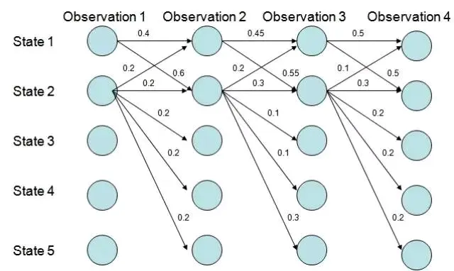
百度搜的马尔可夫链的一个图
声明：1.树苗在代码中是以一个包含四个元素的数组列表存在的，每个元素可以取值1，2，3，分别代表树苗处于不同的阶段。
树苗在代码中为一维数组，初始化全部是处于一阶段，值为1。
2.代码求解的是预催熟结束后，在长树窗口再催熟一次长出来树的概率。
意思就是如果仅一个树苗处于阶段二概率为0.5，下次长树窗口一发骨粉长出来的理论概率就是0.5×0.45=0.225。
3.该数学模型没有考虑随机刻的影响。或者说随机刻的影响相对骨粉催熟很小，可以忽略不计。
4.此方法核心是大量可重复试验中用频率估计概率。
下面是Python代码以及注释：
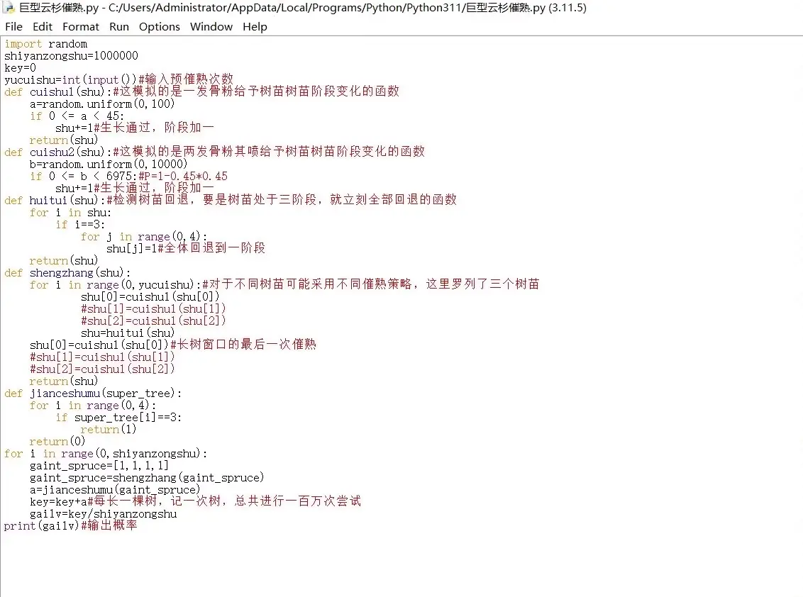
大云杉生长问题数学建模Python源代码
我会对代码每一步的意义进行详细解释：
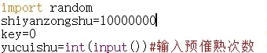
开头一些必要的值初始化
第一步导入随机函数库，规定实验总数为一千万次，key代表最终长出来的树总量，开始时定义为0。input函数输入预催熟次数。
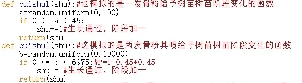
预催熟代码，分两种情况
函数催熟成功则列表中元素的值+1，即代表树苗进入下一阶段。其中3表示长成树（不过在预催熟阶段是必定长不出来树的，所以这个值可以用来判断树苗回退。）
为什么分两种情况：
常规巨型云杉树厂只留了四个发射器位置
我们发现，只有一号树苗能在一次发射器齐喷中获得两发骨粉，生长（阶段变化）概率是0.6975（1-0.55×0.55），符合Python中函数cuishu2；其余二、三号树苗只能接受一发骨粉，生长（阶段变化）概率是0.45，符合Python中函数cuishu1。只有这两种情况。四号树苗怎么都吃不到骨粉（常规架构），一直处于状态1。
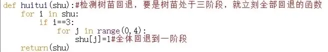
树苗回退代码
此函数对传入的列表遍历整个列表元素，如果发现其中一个值为3（表明树苗在预催熟阶段中处于二阶段时生长成功了一次），则将列表所有值改为1（表示全体回退到第一阶段），并返回一个列表。
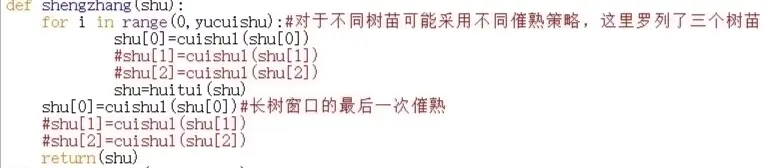
一次生长代码，前半部分是预催熟，后半部分是长树窗口一次催熟。
此函数先用for循环对相应可以吃到催熟的树苗调用相对应的催熟函数，循环次数为input输入的预催熟次数。之后调用回退函数，检测巨型云杉树苗是否全体回退（列表中有值为3的元素则符合回退的if判定）。之后再进行一次相同的催熟，代表长树窗口的一次催熟，并返回一个列表，列表中值代表了各个树苗最初的状态。
可以修改此函数的内部内容，以实现对每个树苗的催熟策略，用来对应不同数目的发射器错峰or齐喷对应的催熟情况！！！
如所给图中代表单发射器催熟一个树苗的情况。#代表注释，其后的代码不运行。
最后的检测成树函数，检测树苗是否长成了树。
此函数遍历整个列表，若发现列表中存在有以3为值的元素（代表第三阶段的树苗），返回数字1，代表长出来了一棵巨型云杉树。否则返回0，代表一次预催熟到催熟长树流程中没有长出来巨型云杉树。返回值用于最后的统计。
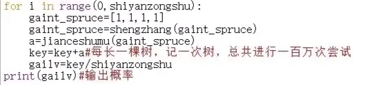
主代码，for循环循环一百万次，最后统计长出来多少棵树。
主代码运行一千万次，统计长出来多少棵树，并返回频率。（此方法用频率估计概率）
四.代码正确性的验证：
主要思路：如果仅催熟其中一个树苗，巨型云杉的催熟问题则降维为单树苗催熟问题，可以套用linlin的单木催熟结论。前面的代码表示的是单发射器催熟巨型云杉的情况。
 [MCBE][水]部分树苗的生长机制
站内专栏 »
[MCBE][水]部分树苗的生长机制
站内专栏 »
这里放出结论：
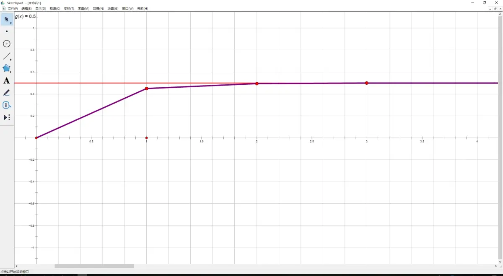
此图代表预催熟结束长树窗口之前，单树苗处于第二阶段的概率P。
则本文章前面Python代码的最终结果应该接近此图折线的值乘以0.45（即在长树窗口生长一次），最后值应该无限趋近0.5×0.45=0.225。
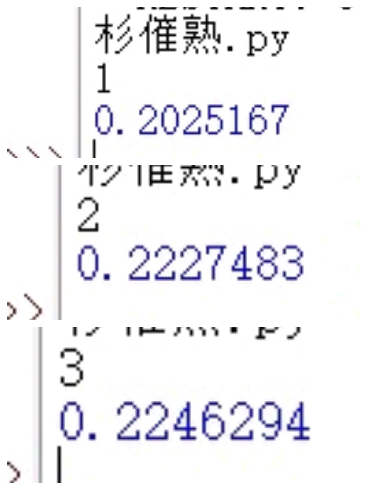
单发射器催熟树苗不同预催熟下长树概率
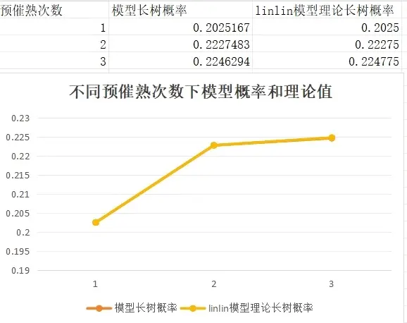
该数值模拟模型和理论模型相比较
我们发现，用该方法得出的频率和最终概率相差不足千分之一，可以取小数点后四位当做最终概率。因此模型是可行的。
五.最优种树策略：
因为玩家种树不可能一次种四棵树，四个树苗种植一定有先后顺序之分。而树苗在形成巨型云杉树苗会保留原有的生长阶段。所以引出最优种树策略：
最优种树顺序策略：优先种植预催熟最多的树苗，再种预催较少的，最后种植没有预催的树苗。（理论参考：@愚蠢的德州马钰）
举个例子：

三个发射器齐喷催熟四个树苗中两个树苗的情况。
如图，对角树苗是双发射器催熟，预催最多；横着旁边树苗是单发射器预催，预催较多；剩下俩没有预催。此种情况最优种树策略是优先对角种树，然后顺时针转着种树，这样可以保证玩家种上最后一棵树苗时候，处于第二阶段的树苗概率最多。
之后列出来的图将会直接说明最优种树顺序
五.不同发射器数目下催熟策略的最优解探究：
（一）发射器齐喷催熟策略：
〔1〕.单发射器齐喷催熟or双发射器对角齐喷催熟]
如图所示：
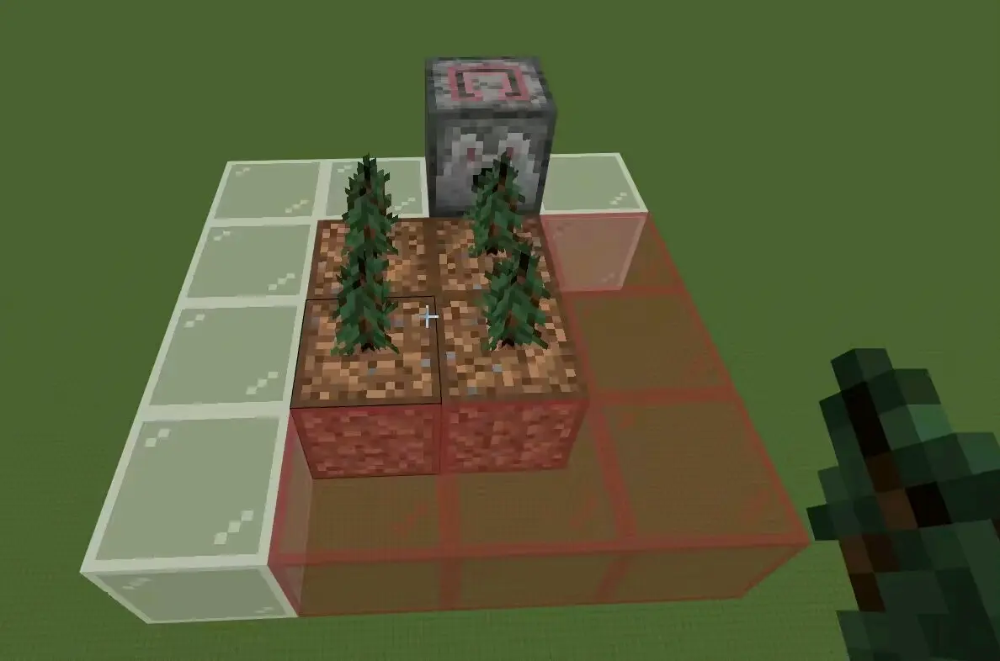
单发射器催熟任意树苗
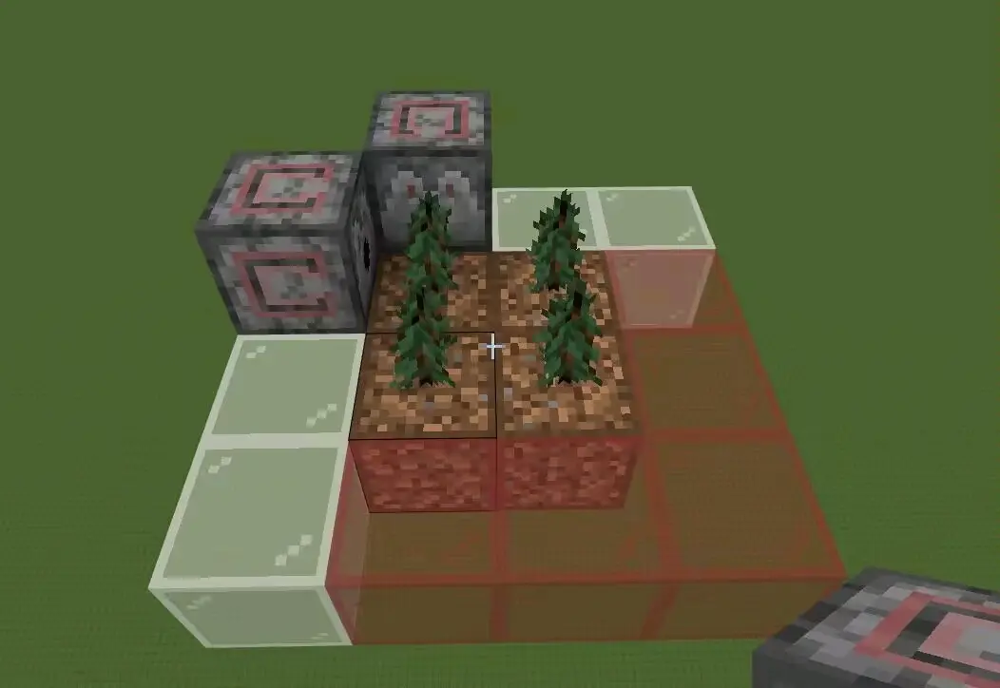
双发射器催熟对角树苗
此时问题降维为单树苗问题，可以直接套用lin的理论：
最优催熟策略：对于此种情况，尽可能给树苗多的骨粉就是最优解—尽可能多的增加预催熟次数（一次预催最有性价比，之后提升甚微）。
最优种树顺序策略：优先种植被催熟的那个树苗。
〔2〕.双发射器齐喷催熟两个树苗：
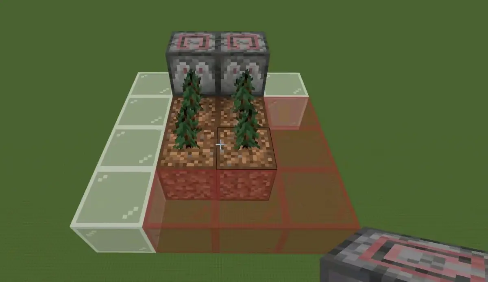
双发射器催熟四个树苗中两个树苗
此时只要对shengzhang函数进行细微修改，对两个树苗用cuishu1函数即可。
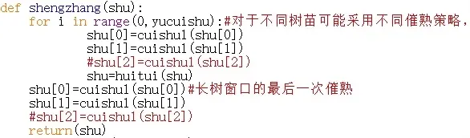
两个树苗都采用cuishu1的策略
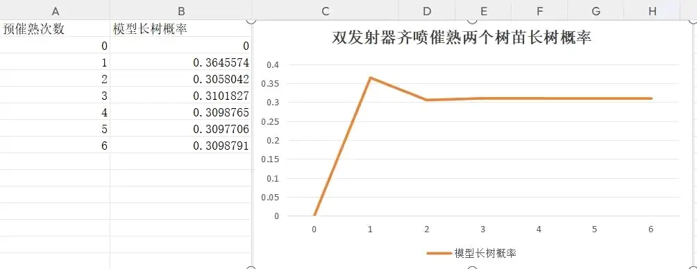
双发射器长树窗口一次催熟长树概率于预催熟次数的关系
笔者发现了完全不同于单木的结论：
双发射器条件下长树概率在预催熟一次情况下达到到最大值，以后锯齿状递减，而且奇数次预催熟长树概率大于偶数次概率，最后趋近于某一个值。
这说明了一个现象：在单树苗树厂中，完全不用考虑预催导致回退使过犹不及的问题，因为长树概率随着预催熟次数单调递增。 但是在巨型云杉树厂中，预催熟偶数次真的会导致树苗回退，过犹不及，而且函数整体是单调递减的，完全不同于单树苗的结论。可以这么说，一个不行全体回退放大了骨粉催熟的副作用。
最优催熟策略：只能进行一次预催熟！
最优种树顺序策略：从左上角树苗顺时针种植，或从右上角逆时针种植。
〔3〕.对角双发射器催熟+侧边一个发射器催熟：
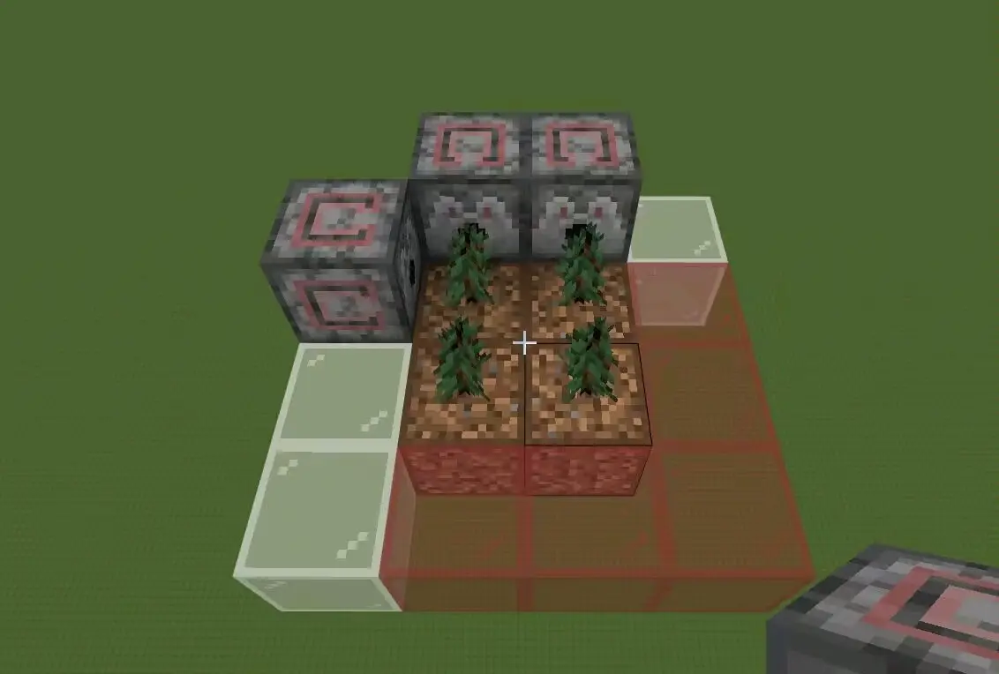
对角双发侧边一发，三发催熟两个树苗
此时对shengzhang函数进行修改，一个树苗用cuishu1函数，另一个用cuishu2函数即可。
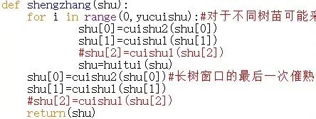
一个树苗采用对角双发催熟策略，另一个采用单发催熟策略
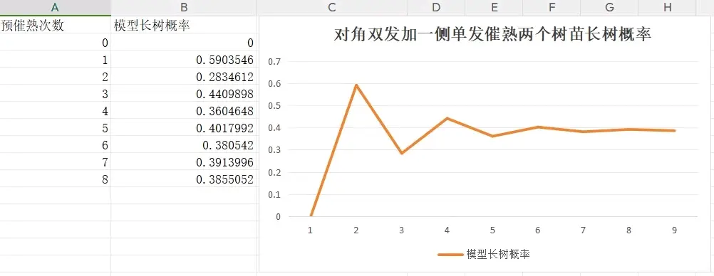
对角双发+一侧三单发长树概率于预催熟次数的关系
我们发现，函数总体趋势和双发一样 。但是锯齿状趋近某一个值更加明显。结论和双发射器一样，均是在预催熟次数一次的时候长树概率达到最大值。
而且三发射器相较于双发射器在长树效率最大值几乎提升大概百分之八十，很显著。
最优催熟策略：只能进行一次预催熟！三发射器对于效率的提升相对双发射器还要明显，大概提升百分之八十。
最优种树顺序策略：对角优先，然后顺时针种树。
〔4〕.三发射器齐喷催熟三个不同树苗：
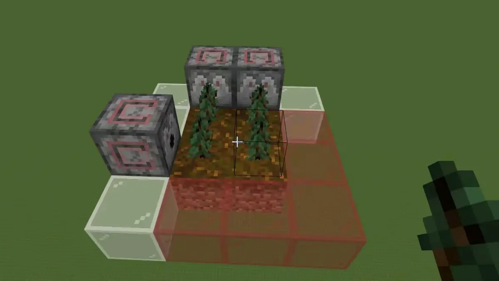
三发催熟三个树苗
此时对shengzhang函数内容进行修改，三个树苗均采用cuishu1函数即可。
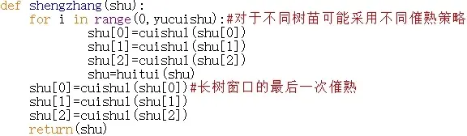
三个树苗均采用单发射器催熟策略
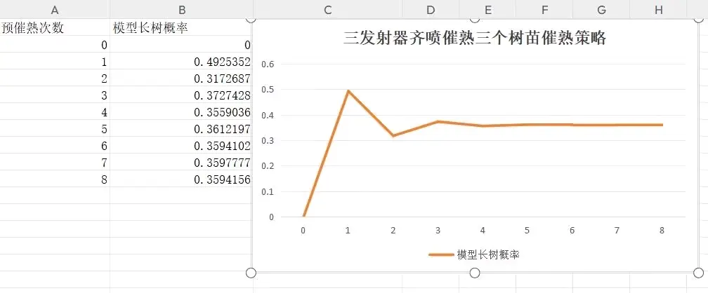
总体结论和对角双发+一侧单发一样
最优催熟策略：只能进行一次预催熟，而且对角双发的三发射器优于三发射器催熟三个树苗的催熟方法。长树概率仍然在预催熟一次达到最大值。
最优种树顺序策略：从左上角树苗开始，沿着“N”字的镜像形种满，或者从右上角树苗开始沿着逆时针种树。
〔5〕.四发射器齐喷催熟：
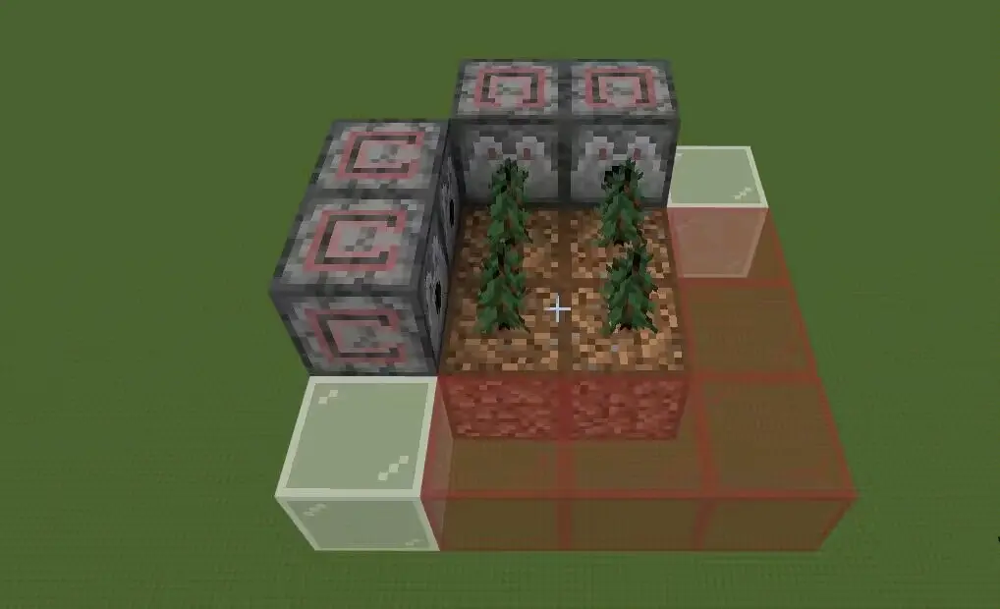
对角双发+侧边各一发，共四发射器
此时对shengzhang函数进行修改，一个树苗采用cuishu2函数，两个采用cuishu1即可。
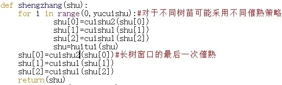
对角双发+两侧单发催熟三个树苗策略
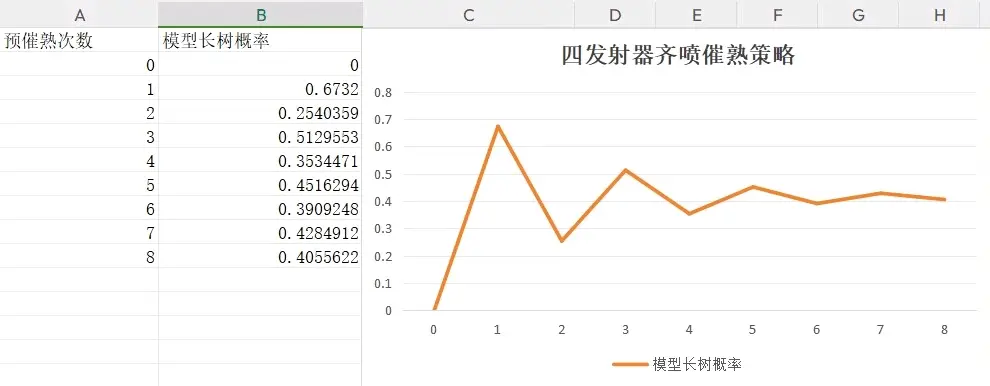
折线图的锯齿状更加明显，效率提升相对三发比较细微。
我们发现四发射器的结论：
对于四发射器，长树概率随预催熟次数的关系图锯齿状更加明显，也是预催熟次数为一时候概率取到最大值，之后锯齿状递减趋近于某一个值。
而且四发射器相对于三发射器的效率提升比较小，大概是有百分之十几，不像三发射器对于双发射器的提升，达到了惊人的百分之八十。
最优预催熟策略：只能使用一次预催熟，如果追求性价比，三发射器比四发射器更节省骨粉，两者效率也就相差百分之十二三左右。
最优种树顺序策略：对角优先种树，顺时针逆时针都行，N字形也行。
（2）错峰催熟策略：
〔1〕.双发射器错峰催熟两个树苗
发射器周期是4gt，所以错峰的话，4gt内a发射器会喷一次，然后2gt过后b发射器喷一次，这是一个周期。长树窗口只能有一个发射器催熟的那一次。
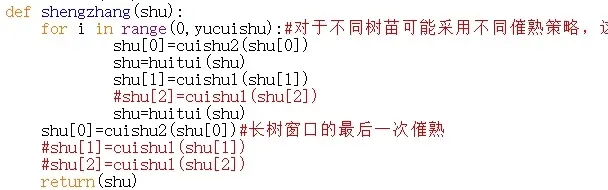
双发射器错峰源代码
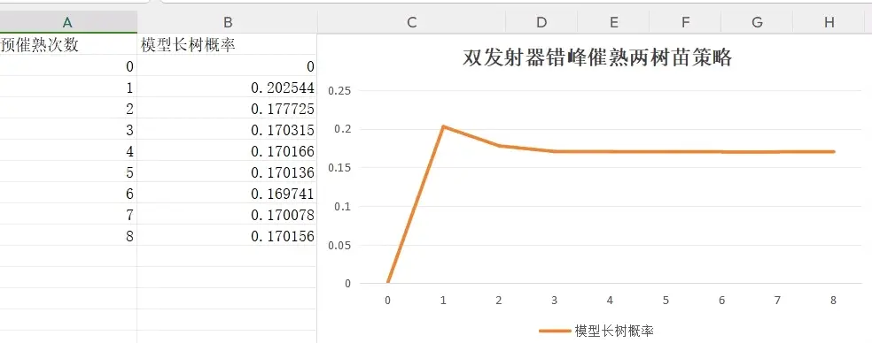
模拟结果
我们发现双发射器错峰比齐喷效率要低很多，大概能低个百分之三十左右。
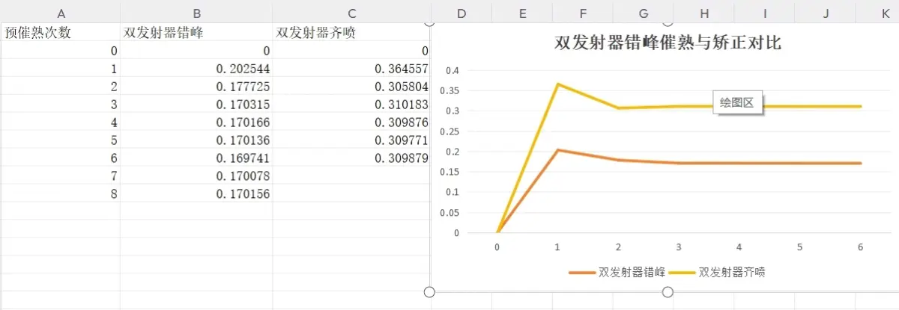
可以发现双发错峰明显低于齐喷
〔2〕.三发射器对角齐喷，侧边一发射器矫正
前面已经得知对角双发的三发射器效率较高，因此三发射器的齐喷和错峰用对角双发的发射器布局来探究。
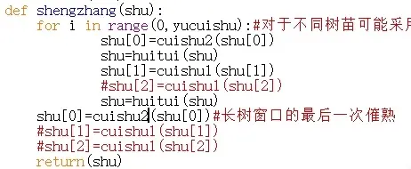
对角双发齐喷+一矫正催熟思路函数
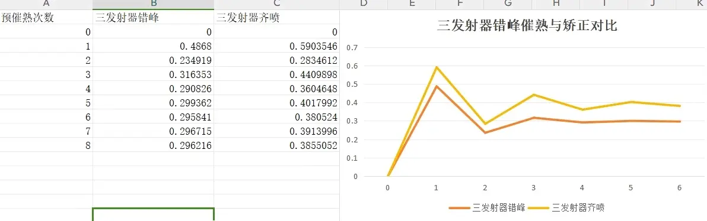
两种催熟思路的比较
我们可以看出，错峰催熟效率大概要比齐喷低百分之三十左右，所以催熟策略优先选择齐喷。
四发射器再次不再赘述。
六.最终结论探究：
结论一：巨型云杉树厂单发射器和对角双发催熟一个树苗的模型是预催熟越多越好。
结论二：巨型云杉树厂其余情况在预催熟次数一次情况下效率达到最大值（即预催一次为最优解），之后便递减锯齿状趋近某一个值。即过量预催熟只会过犹不及。
结论三：同等数量发射器情况下齐喷比错峰效率高出很多，齐喷是最优解。
结论四：种树时候优先种预催熟最多的树苗，然后种预催熟最少的，最后种没有预催熟的树苗。
七.模型不足之处：
据linlin佬所说，齐喷微时序上实际上是分先后顺序的，这是代码没考虑到的。不过微时序顺序在be很难确定而且有随机性，使题解难度很大 。
模型并不能解出理论值，只能逼近理论值。
八.特别鸣谢：
@bWFuanVzYWth （lin佬）
@愚蠢的德州马钰（马钰）
@夜空中最亮的星_Starest
@FurFur_123
@16457324657_bili(rue佬）
@断罪只神女芙宁娜
最后，第一次用数学建模的方法求解问题，如有问题请指正。感谢感谢